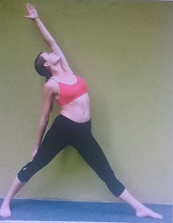
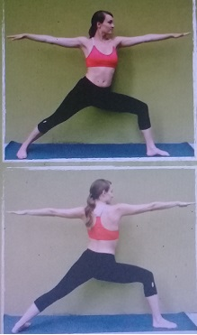
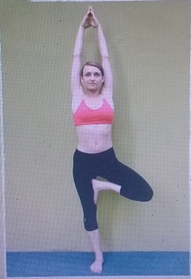
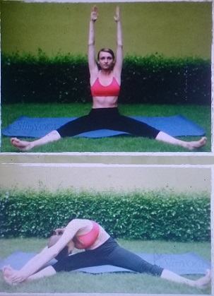

Perform all the postures slowly and with control. You are not in competition
with anyone, not even yourself. You'll progress faster when you take things
slowly.
❖ Concentrate on your breathing, feel the air slowly flowing through your body,
relaxing and energizing it.
❖ Relax. Let go of any unnecessary tension, stress or negative thoughts.
❖ Start every session with the warm-up. It's essential to avoid injuries.
❖ Modify the postures for your body. The instructions and pictures of the yoga
postures in this book are the final goal - the direction you are going towards, not
where you need to be after your first few sessions. Experiment and explore
different positions and alignments to make the posture work for your body.
❖ Don't expect instant results. Yoga is a not a quick fix for your weight
problems. Patience is a key to unlocking the long-term slimming benefits of
Yoga.
❖ Have Fun! The best way to get results with your Yoga practice is to enjoy it.
Feeling happy while practicing Yoga puts the mind and body into a positive
state.
❖ Most Importantly, listen to and respect your body. Never force any movement.
Let your body lead you, it is your greatest teacher!
INSTRUCTIONS:
UPPER BODY TWIST
❖ stand straight with your legs apart❖ inhale raise the hands up from the sides on the shoulder level
❖ exhale and turn to the left in the waist keeping both the arms and shoulders straight
❖ turn as far as possible
❖ inhale and twist back to the front
❖ exhale and twist to the right side
❖ this is one round
❖ repeat one more time
FORWARD/BACKWARD BEND
❖ stand straight with your legs apart❖ inhale bring your hands on the waist
❖ exhale and bend forward from the waist keeping the knees straight
❖ bend down as much as possible
❖ inhale and come back to initial position
❖ exhale and bend backward
❖ inhale come back to initial position
❖ this is one round
❖ repeat one more time
SIDE BENDS
❖ stand straight with your legs apart❖ inhale bring your hands on the waist
❖ exhale and bend the body in the waist to the left side
❖ keep the knees straight
❖ inhale and come back to initial position
❖ exhale and bend the body in the waist to the right side
❖ inhale and come back to initial pose
❖ this is one round
❖ repeat one more time
UPPER BODY ROTATION
❖ stand straight with your legs apart ❖ inhale bring your hands together above the head❖ exhale and bend forward from the waist keeping the knees straight
❖ inhale rotate your upper body to the left ❖ continue inhaling and bend to the back
❖ exhale and bend to the right ❖ continue exhaling and bend forward
❖ inhale and go back, rotate to the right ❖ keep inhaling and rotate to the back
❖ exhale and rotate to the left ❖ keep exhaling and rotate to the front
❖ get back to initial standing pose ❖ this is one round ❖ repeat one more time
SHOULDER ROTATION
❖ stand straight with your legs apart❖ your hands on the shoulders
❖ breathe normally
❖ start rotating your arms in big circles to the back - 5 circles
❖ repeat rotation to the front - 5 circles
❖ release the hands and get back to initial standing pose

WRISTS ROTATION
❖ stand straight with your legs apart❖ bring your hands in front on the shoulder level
❖ start rotating your both wrists
❖ rotate 5 circles to the outer side, then 5 circles in the opposite direction
❖ release the hands and get back to initial standing pose

HEAD ROTATION
❖ stand straight with your legs apart❖ bring your hands on the waist
❖ bend the neck forward and start rotating to the left, to the back, to the right and front
❖ rotate back to the right, back, left and front
❖ repeat one more time
❖ straighten the neck and release the hands, come back to the initial standing pose

SWINGING WHILE STANDING POSE
❖ stand straight with your legs apart❖ raise the arms over the head, keeping the elbows straight
❖ bend forward and swing the trunk down from the hips
❖ allow the arms and head to swing through the legs
❖ be tension free like a rag doll
❖ return smoothly to the upright position with the arms raised
❖ inhale forcefully through the nose while raising the arms up and exhale forcefully while swinging downwards
❖ repeat 10 times
General Benefits
❖ strengthening the back and balancing the metabolism❖ stimulating and balancing all the systems of the body, including the digestive system
❖ practiced in a fast pace helps to burn fat and lose weight
General Precautions
❖ the practice should be immediately discontinued if a fever, acute inflammation, boils or rashes occur due to excess toxins in the body. When the toxins have been eliminated, the practice may be resumed❖ it shouldnʼt be practiced by people with high blood pressure, coronary artery disorders, or by those who have had a stroke, as it may overstimulate or damage a week heart or blood vessel system
❖ it should be avoided in case of hernia and intestinal tuberculosis
❖ people with back conditions such as slipped disc and sciatica should consult a doctor before the practice
❖ women should avoid it during the onset of menstruation, practice can be resumed towards the end of the period
PRAYER POSE
❖ stand straight, bring your feet together and your palms together on your chest❖ breathe normally
STANDING BACK ARCH
❖ inhale and raise your both arms up above the head, bend the head, arms and upper trunk slightly backward, look upFORWARD BEND
❖ exhale and bend forward from the hips ❖ touch the floor with your fingers or palms❖ bring the forehead as close to the knees as is comfortable
❖ do not strain, keep the knees straight
HALF COBRA POSE
❖ place your palms on the floor beside the feet, keep the arms straight❖ inhale and bring your left leg back, drop your left knee on the floor and bend your right knee
❖ in the final posture, the left foot, both hands, left knee and toes support the body.
❖ the back is slightly arched and the head faces forward, look upwards
PLANK POSE
❖ hold the breath and from Half Cobra Pose bring your right leg back, straighten your knees and hands❖ drop the hips until the body forms a straight line from the top of your head to your heels
❖ focus the gaze on the fixed point in front
ASHTANGA POSE
❖ exhale and from Plank Pose lower your knees, chest and chin on the floor; the feet will come up on to the toes❖ in the final position only the toes, knees, chest, hands and chin (8 parts of the body) should touch the floor
❖ the buttocks, chips and abdomen should be raised
COBRA POSE
❖ inhale, keep your hands beside your chest and slide the chest forward and raise first the head, the shoulders, then, straightening the elbows❖ arch the back into the Cobra Pose
❖ this will lower the hips and the buttocks to the floor
❖ bend the head back and look upward
DOWNWARD FACING DOG POSE
❖ hold the breath, raise your hips up and lower the head between the arms so that the back and legs form two sides of a triangle ❖ keep the knees and hands straight ❖ push the heels and head towards the floorHALF COBRA POSE
❖ hold the breath and from Downward Facing Dog lean forward and bring your left leg forward ❖ place your palms on the floor beside the left foot, keep the arms straight ❖ drop your right knee on the floor and bend your left knee ❖ the back is slightly arched and the head faces forward, look upwardsFORWARD BEND
❖ exhale and from Half Cobra Pose bring your right leg forward ❖ bend forward from the hips ❖ touch the floor with your fingers or palms ❖ bring the forehead as close to the knees as is comfortable ❖ do not strain, keep the knees straightSTANDING BACK ARCH
❖ inhale and raise your both arms up above the head, bend the head, arms and upper trunk slightly backward, look upPRAYER POSE
❖ exhale and release your hands, bring the palms together on the chest ❖ stand straight with your feet together ❖ this is one full round of Sun SalutationINSTRUCTIONS:
ONE LEG FORWARD BEND
❖ stand straight with legs together
❖ step forward with your left leg, turn your right foot to 45
degrees
❖ bring your both palms together behind your back,
interlock the fingers and place your palms on your
lower back
❖ inhale raise your head up, expand your chest and look
up
❖ exhale bend forward, bringing your forehead to the
knee, while keeping both legs straight
❖ stay in this pose for 5 breaths and with inhale raise
your head up back to the starting pose
❖ repeat on the right side
Precautions:
People with weak heart and lower back problems should
not practice this posture
Benefits:
❖ opening hip and shoulders joints
❖ stretching the lower back
❖ contracting abdominal muscles, helping to burn the fat
in this area
❖ strengthening the legs
TRIANGLE POSE
❖ stand straight with legs together
❖ step forward with your left leg, turn your right foot to 45
degrees
❖ inhale, stretch the arms sideways on the shoulder
level so that they are in one straight line
❖ exhale, bend to the left, bringing left hand down to the
left foot and right hand up
❖ keep your knees straight and arms in straight line
❖ look up at the left hand in the final position and hold
the position for 5 breaths
❖ inhale, return to the upright position with the arms in a
straight line
❖ exhale, release the hands on the sides of your body
❖ repeat on the right side
Precautions:
None
Benefits:
❖ toning the muscles on the side of the trunk, the waist
and the back of the legs
❖ improving digestion
❖ helping to reduce waistline fat

ONE HAND BACKBEND
❖ stand straight with legs together
❖ step forward with your left leg, turn your right foot to
45 degrees
❖ inhale, stretch the arms sideways on the shoulder
level so that they are in one straight line
❖ exhale, tilt your upper body to the back, bringing left
hand up, right hand stays on the thigh
❖ keep your knees straight
❖ look up at the left hand in the final position and hold
the position for 5 breaths
❖ inhale, return to the starting position with the arms in
a straight line
❖ exhale, release the hands on the sides of your body
❖ repeat on the right side
Precautions:
Make sure that you are tilting to the back and releasing the pose very slowly, otherwise you might feel dizzy
Benefits:
❖ toning the muscles on the side of the trunk, the waist
and the back of the legs
❖ improving digestion
❖ helping to reduce waistline fat

REVOLVED TRIANGLE POSE
❖ stand straight with the feet more than shoulder width apart
❖ turn the left foot to the left side
❖ inhale, raise the arms sideways to the shoulder level
❖ exhale, twist the trunk to the left, bend forward and bring
your right hand on the outer side of the left foot and the
left hand up, stretched vertically so that both arms are
forming a straight line
❖ look up at the left hand, keep your knees straight
❖ hold the final position for 5 breaths, balancing the body
and feeling the twist and stretch of the back
❖ inhale, raise your hands up to shoulder level
❖ exhale, return to the center forward position
❖ repeat on the other side
Option:
If you canʼt place your hand on the outer side of the foot, you can place your palm on your ankle or calf - the most important is to keep the knees straight
Precautions:
People suffering from back conditions shouldnʼt practice this posture
Benefits:
❖ toning up the thigh, calf, hip and hamstring muscles ❖ reducing fat around the waist and hips ❖ strengthening and toning the arms
SIDE ANGLE STRETCH
❖ stand erect with the feet more than shoulder width
apart
❖ turn the left foot to the left side
❖ inhale, bend your left knee and place your left elbow
on the thigh, lean forward, so that you left thigh is
parallel to the floor
❖ exhale, extend your right arm over the ear until you
form a straight line from the tips of your fingers to the
toes
❖ look to your right side and hold the posture for 5
breaths
❖ inhale, release the right hand to the back
❖ exhale, return to the starting position
❖ repeat on the other side
Precautions:
People with weak heart and lower back problems should not practice this posture
Benefits:
❖ toning up ankles, knees and thighs ❖ reducing fat around the waist and hips ❖ toning the legs
REVOLVED SIDE ANGLE STRETCH
❖ stand erect with the feet widely spread apart
❖ inhale, turn the left foot to the left side
❖ exhale, bend your left knee, bend forward, rotate
your trunk, bring your palms together and place your
right elbow on the outer side of your left knee
❖ expand your chest up
❖ hold this pose for 5 breaths
❖ inhale, release the hands to the front
❖ exhale, return to the starting position
❖ repeat on the other side
Precautions:
People suffering from serious back conditions and weak knees shouldnʼt practice this posture
Benefits:
❖ improving digestion by contracting abdominal organs
❖ the blood is circulating well round the abdominal
organs and the spinal column and they are thus
rejuvenated
❖ helping to remove waste matter from the colon
without strain
CHEST EXPAND
❖ stand erect with the feet widely spread apart
❖ inhale, raise your both hands up and tilt to the back
❖ expand the chest and hold it for few seconds
❖ exhale, release the hands and return to the starting
position
Precautions:
People with weak heart and lower back problems should not practice this posture
Benefits:
❖ stretching arms and spine
❖ helping in deep breathing
❖ toning abdominal muscles
❖ strengthening the lower back, calfs and buttocks

WIDE LEG FORWARD BEND 1
❖ stand erect with the feet widely spread apart
❖ inhale, raise your both hands up, tilt to the back and
expand the chest
❖ exhale, bend forward, place your palms on the floor
and push your head towards the floor
❖ hold the posture for 5 breaths
❖ inhale, slowly raise your head and hands up
❖ exhale, release the hands and return to the starting
position
Option:
If you canʼt touch your head to the floor, just bring your hands on the floor - donʼt strain, go only as far as your body allows you
Precautions:
People with serious neck/arm/shoulder problems should not practice this posture
Benefits:
❖ strengthening and slimming the arms and upper back ❖ stretching the hamstrings

WIDE LEG FORWARD BEND 2
❖ stand erect with the feet widely spread apart
❖ inhale, bring the hands to the back, interlock the
fingers
❖ exhale, bend forward, raise your hands up, so that
the shoulder blades are coming closer
❖ hold the posture for 5 breaths
❖ inhale, slowly drop your hands on the lower back and
raise your head up
❖ exhale, release the hands and return to the starting
position
Precautions:
People with serious neck/arm/shoulder problems should not practice this posture
Benefits:❖ strengthening and relieving stiffness in shoulders, arms and upper back ❖ stretching the hamstrings
WIDE LEG FORWARD TWIST
❖ from the Wide Leg Forward Bend I leave your left
hand in the center on the floor and with inhale twist
your trunk and raise your right hand up
❖ both hands should form a straight line, look up
❖ hold the posture for 5 breaths
❖ exhale, bring your left hand back on the floor
❖ repeat on the right side
Precautions:
People with serious neck/arm/shoulder problems should not practice this posture
Benefits:
❖ strengthening the arms, shoulders, chest and upper back ❖ toning the abdominal muscles and lower back
WARRIOR POSE 1
❖ stand straight with legs together
❖ step forward with your left leg, turn your right foot to
45 degrees
❖ bring your both palms together on your knee, bend
your knee so that thigh is parallel to the floor
❖ inhale, raise your both hands up, stretch the spine
and gaze forward
❖ the bent knee should not extend beyond the ankle
but should be in line with heel
❖ hold the pose for 5 long breaths
❖ exhale and release your hands down, go back to the
starting pose
❖ repeat on the right side
Precautions:
People with weak heart and lower back problems should not practice this posture
Benefits:
❖ it relieves stiffness in shoulders and back, tones up
the ankles and knees and cures stiffness of he neck
❖ it reduces fat around the hips
❖ it helps in deep breathing

WARRIOR POSE 2
❖ stand straight with legs together
❖ step forward with your left leg, turn your right foot to
45 degrees
❖ bend your left knee so that thigh is parallel to the
floor
❖ inhale, stretch your hands sideways on the shoulder
level and gaze at your left palm
❖ your right knee remains straight
❖ the left knee should not extend beyond the ankle but
should be in line with heel
❖ hold the pose for 5 long breaths
❖ exhale and release your hands down, go back to the
starting pose
❖ repeat on the right side
Precautions:
People with weak heart and lower back problems should not practice this posture
Benefits:
❖ legs muscles become shapely and stronger
❖ bringing elasticity to the legs and back muscles and
also toning the abdominal organs
❖ strengthening the arms
EASY WARRIOR POSE 3
❖ from Warrior Pose I, exhale lower your left knee and
bend the trunk forward
❖ rest the chest on the thigh and bring your hands
forward
❖ keep the arms straight and the palms together
❖ hold this position for 5 long breaths
❖ exhale, lower your hands to the knee and raise up
while straightening your both legs
❖ go back to starting position
❖ repeat on the right side
Precautions:
People with weak heart and lower back problems should not practice this posture
Benefits:
❖ contracting and toning abdominal organs and making
the leg muscles more shapely and sturdy
❖ helping to get rid of fat in abdominal area and hips
❖ strengthening the thighs
EASY HALF MOON POSE
❖ from Easy Warrior Pose III place your palms on the
floor beside the feet, keep the arms straight
❖ inhale, raise your right leg up, hold it parallel to the
floor and straighten your left knee
❖ look down on the floor
❖ hold the posture for 5 breaths
❖ exhale, drop your right leg on the floor and go back
to the starting pose
❖ repeat on the other side
Precautions:
People with lower back problems should not practice this posture.
Benefits:
❖ reducing fat around the hips
❖ stretching the hamstrings, calfs and thighs muscles
❖ toning the buttocks
INSTRUCTIONS

TREE POSE
❖ stand with the feet together and the arms by the sides
❖ steady the body and distribute the weight equally on
both feet
❖ raise your left leg, bend the knee and place the sole
on the inner side of your right thigh
❖ fix the eyes at one point and find the balance
❖ inhale, raise the arms over the head, bring the palms
together and stretch the arms, shoulders and chest
upward
❖ stretch the whole body from top to bottom, without
losing balance or moving the feet
❖ hold the position for 5 breaths
❖ exhale slowly release the arms and left leg down to
the starting position
❖ repeat on the other side
Precautions:
Be careful with the ankles, warm it up before the practice
Benefits:
❖ developing physical and mental balance
❖ stretching the abdominal muscles and the intestines,
helping to keep the abdominal muscles and nerves
toned
❖ improving the posture
STANDING HALF BOW BALANCE
❖ stand with the feet together and focus on a fixed
point
❖ inhale, bend the left knee and grasp the ankle with
the left hand behind the body, raise the right hand up
❖ keep both knees together and maintain the balance
❖ exhale, slowly raise and stretch the right leg
backward as high as comfortable
❖ reach upward and forward with the right arm
❖ focus the gaze on a right hand
❖ hold the position for 5 breaths
❖ inhale, lower the right arm to the side, lower the left
leg, bringing the knees together
❖ exhale, release the left ankle and lower the foot to
the floor, lower the right arm to the side.
❖ repeat on the other side
Precautions:
People who suffer from a weak heart, high blood pressure, back problems, hernia, colitis, peptic or duodenal ulcers or vertigo should not practice it
Benefits:
❖ strengthening the back, shoulders, arms, hips and
legs
❖ developing a sense of balance and coordination and
improving concentration
STANDING KNEE TO CHANGE BALANCE
❖ stand with the feet together and the arms by the
sides
❖ inhale, raise your left leg, grab hold of the shin and
bring the knee close to the chest with toes pointing
down
❖ stretch the whole body from top to bottom, without
losing balance or moving the feet
❖ fix the eyes at one point and find the balance
❖ hold the position for 5 breaths
❖ exhale slowly release the arms and left leg down to
the starting position
❖ repeat on the other side
Precautions:
Be careful with the ankles, warm it up before the practice.
Benefits:
❖ developing physical and mental balance
❖ stretching the abdominal muscles and the intestines,
helping to keep the abdominal muscles and nerves
toned
❖ improving the posture and strengthening the arms
❖ stimulating digestion
STANDING KNEE SIDE BALANCE
❖ from the Standing Knee To Chest Balance inhale and
bring your bent knee to the left side and your right
hand to the right side on the shoulder level
❖ stretch the whole body from top to bottom, without
losing balance or moving the feet
❖ fix the eyes at one point and find the balance
❖ hold the position for 5 breaths
❖ exhale, slowly release the left leg to the front and
drop the foot on the floor
❖ bring the right hand back to the side
❖ repeat on the other side
Precautions:
Be careful with the ankles, warm it up before the practice.
Benefits:
❖ developing physical and mental balance
❖ stretching the abdominal muscles and the intestines,
helping to keep the abdominal muscles and nerves
toned
❖ improving the posture
❖ strengthening the arms and lower back
EAGLE POSE
❖ stand with the feet together and the arms by the sides
❖ hold the left leg straight, bend the right leg and twist it
around the left leg
❖ the right thigh should be in front of the left thigh and
the top of the right foot should rest on the calf of the
left leg
❖ bend the elbows and bring them in front of the chest
❖ inhale, twist the forearms around each other with the
left elbow remaining below
❖ place the palms together to resemble and eagleʼs
beak
❖ balance in this position, then exhale, slowly bend the
left knee and lower the body, keeping the back straight
❖ keep he eyes focused on the fixed point
❖ hold the final position for 5 breaths, then raise the
body, and release the legs and arms
❖ repeat on the other side
Precautions:
People with tight knees should be careful with this posture
Benefits:
❖ strengthening the muscles and loosening the joints of
the shoulders, arms and legs
❖ itʼs good for stretching upper back
❖ improving concentration
CHAIR POSE
❖ stand with the feet together and the arms by the
sides
❖ inhale, raise the arms over the head
❖ exhale, bend the knees and lower the trunk
❖ do not stoop forward, but keep the chest as far back
as possible and breathe normally
❖ keep your back straight and hold the pose for 5
breaths
❖ inhale, straighten the legs,
❖ exhale, lower the arms and come back to standing
pose
Precautions:
People suffering from serious back conditions should avoid this posture
Benefits:
❖ removing stiffness in the shoulders
❖ the ankles become strong and the leg muscles
develop evenly
❖ the diaphragm is lifted up and this gives a gentle
massage to the heart
❖ the abdominal organs and the back are toned and
the chest is developed by being fully expanded
TIPTOE POSE
❖ stand with the feet together and the arms by the
sides
❖ inhale, raise up on the toes and bring your hands up
on the shoulder level
❖ exhale, squat with the gaze focused on a fixed point
❖ raise the heels and balance on the tiptoes
❖ allow the knees to come forward slightly so that the
thighs are parallel to the floor
❖ place your palms on the thighs, straighten your back
and balance the whole body
❖ stay in this position for 5 breaths
❖ release the pose, drop your knees on the floor and sit
between your feet to relax
Precautions:
People with sciatica, slipped disc, ankle or knee problems should not practice this asana
Benefits:
❖ strengthening the toes, ankles, lower back and thighs ❖ improving balance and concentration
INSTRUCTIONS:
EASY MEDITATION POSE
❖ sit with legs straight in front of the body
❖ bend both legs and cross it in front of your body
❖ place the hands on the knees
❖ close your eyes
❖ keep the head, neck and back upright and straight
❖ relax the whole body
❖ arms should be relaxed and not held straight
Precautions:
People with severe knees problems should not be sitting
in this posture for too long
Benefits:
❖ this is the easiest and most comfortable meditative
pose
❖ it facilitates mental and physical balance without
strain or pain
HALF LOTUS POSE
❖ sit with legs straight in front of the body
❖ bend one leg and place the sole of the foot on the
inside of the opposite thigh
❖ bend the other leg and place the foot on top of the
opposite thigh
❖ without any strain, try to place the upper heel as near
as possible to the abdomen
❖ adjust the position so that it is comfortable
❖ place the hands on the knees and close your eyes
❖ keep the head, neck and back upright and straight
❖ relax the whole body
❖ arms should be relaxed and not held straight
Precautions:
People suffering from sciatica or weak or injured knees
should not perform this posture
Benefits:
❖ allowing the body to be held completely steady for long
periods of time, holding the trunk and head like a pillar
with the legs as a firm foundation
❖ applying pressure to the lower spine, which has a
relaxing effect on the nervous system
❖ the breath becomes slow, muscular tension is
decreased and blood pressure is reduced
❖ the normally large blood flow of the legs is redirected to
the abdominal region stimulating digestive process
LOTUS POSE
❖ sit with legs straight in front of the body
❖ bend the left knee and place the left foot on the right
thigh
❖ bend the right knee and place the right foot on the left
thigh
❖ adjust the pose so that it is comfortable, the knees
should be firmly on the floor
❖ place the hands on the knees and close your eyes
❖ keep the head, neck and back upright and straight
❖ relax the whole body
❖ arms should be relaxed and not held straight
Precautions:
People with sciatica or sacral infections should not perform
this posture
Benefits:
❖ itʼs a healthy position to sit in, especially for those
suffering from varicose veins, tired and aching muscles
or fluid retention in the legs
❖ it increases the efficiency of the entire digestive system,
relieving stomach ailments such as hyperacidity and
peptic ulcer
❖ you can practice Vajrasana directly after meals, for at
least 5 minutes to enhance the digestive function.
THUNDERBOLT POSE 1
❖ kneel on the floor with the knees close together
❖ bring the big toes together and separate the heels
❖ lower the buttocks onto the inside surface of the feet
with the heels touching the sides of the hips.
❖ place the hands on the thighs, palms down
❖ the back and head should be straight but not tense
❖ close the eyes, relax the arms and the whole body
Option:
If there is a pain in the thighs or ankles, the knees may be
separated slightly while maintaining the posture. You can
also put the pillow below your buttocks and sit on it.
Precautions:
Be careful with your ankles and knees
Benefits:
❖ altering the flow of blood and nervous impulses into
pelvic region and strengthening the pelvic muscles
❖ increasing the efficiency of the entire digestive system,
relieving stomach ailments such as hyperacidity and
peptic ulcer
❖ this is the only posture that you can practice directly
after meals, for at least 5 minutes to enhance the
digestive function
THUNDERBOLT POSE 2
❖ from the Thunderbolt Pose I bring your hands to the
back, interlock the fingers
❖ inhale, raise your head up and expand the chest
❖ exhale, bend forward and rest the chest on the thighs
and forehead on the floor
❖ raise the hands up, so that the shoulder blades will
come close to each other
❖ hold the pose for 5 breaths
❖ inhale drop the hands on your lower back and slowly
raise the head and upper body up
❖ exhale, go back to the starting pose - place the hands
on the thighs, palms down and look forward
Option:
If you have tight shoulders, you can just rest your hands
on the lower back without raising it up
Precautions:
Be careful with your ankles, knees and shoulders
Benefits:
❖ increasing the efficiency of the entire digestive
system, relieving stomach ailments such as
hyperacidity and peptic ulcer
❖ stretching and strengthening the shoulders and arms
THUNDERBOLT POSE 3
❖ from the Thunderbolt Pose I bring your left palm
below the belly button, put the right palm on top of
the left palm
❖ inhale, raise your head up and expand the chest
❖ exhale, bend forward and rest the chest on the
thighs and forehead on the floor
❖ your palms are pressing the stomach
❖ hold the pose for 5 breaths
❖ inhale, slowly raise the head and upper body up
❖ exhale, go back to the starting pose - place the
hands on the thighs, palms down and look forward
Precautions:
Be careful with your ankles and knees. It shouldnʼt be
performed by people with gastric problems
Benefits:
❖ speeding up digestion due to the pressure on the
stomach
❖ getting rid of excess wind or gas in your belly
❖ adding strength to the calf and thigh muscles.

ONE LEG FOWARD BEND 1
❖ sit down on the floor with your legs outstretched and
spread apart as far as possible
❖ inhale, raise your both hands up above the head
❖ exhale, twist the trunk and bend forward to the left leg
❖ grab hold of your left toe (calf)
❖ bring the forehead to the knee, keep the knee straight
❖ hold the pose for 5 breaths
❖ inhale, raise your both hands up above the head
❖ exhale, twist to the right side and repeat the
movement on the right side
Precautions:
People suffering from slipped disc, sciatica or hernia
should not practice this posture
Benefits:
❖ stretching hamstring muscles and increasing
flexibility in the hip joints
❖ toning and massaging the entire abdominal and
pelvic region
❖ removing excess weight in the abdominal area and
stimulating circulation to the nerves and muscles of
the spine
ONE LEG FORWARD BEND 2
❖ sit down on the floor with your legs outstretched and
spread apart as far as possible
❖ bring your left hand up and rest your right hand on
the back
❖ twist your trunk and bend forward to your right leg,
grab hold of your right toe (calf) with your left hand
❖ inhale, raise your head up, look up
❖ exhale, bend forward and bring the forehead as
close as possible to the knee
❖ keep both knees straight
❖ hold the pose for 5 breaths
❖ inhale, raise your head and left hand up, bring your
left hand to the back and right hand up, twist to the
left side and repeat the movement on the left side
Precautions:
People who suffer from slipped disc, sciatica or hernia
should not practice this posture
Benefits:
❖ stretching hamstring muscles and increasing
flexibility in the hip joints
❖ toning and massaging the entire abdominal and
pelvic region
❖ removing excess weight in abdominal area and
stimulating circulation to the nerves and muscles of
the spine
TWO LEGS FORWARD BEND 1
❖ sit down on the floor with your legs outstretched and
spread apart as far as possible
❖ inhale, raise the both hands up above the head
❖ exhale, bend forward and grab hold of your left toe
with your left hand and right toe with your right hand
❖ try to bring your forehead to the floor in between the
knees, keep both knees straight
❖ hold the pose for 5 breaths
❖ inhale, raise your both hands and head up
❖ exhale, release both hands on the floor next to the
thighs
Precautions:
People suffering from slipped disc, sciatica or hernia
should not practice this posture
Benefits:
❖ stretching hamstring muscles and increasing
flexibility in the hip joints and spine
❖ toning and massaging the entire abdominal and
pelvic region
❖ removing excess weight in abdominal area and
stimulating circulation to the nerves and muscles of
the spine
TWO LEGS FORWARD BEND 2
❖ sit down on the floor with your legs outstretched, feet
together
❖ inhale, raise your both hands up above the head
❖ exhale bend forward, slide the hands down the legs
and grab hold of your feet (alternative: ankles, calfs)
❖ bring your head as close as possible to the knees,
keeping your knees straight
❖ hold the pose for 5 breaths
❖ inhale, raise both hands up
❖ exhale, release both hands on the floor next to the
thighs
Precautions:
People suffering from slipped disc, sciatica or hernia
should not practice this asana
Benefits:
❖ stretching hamstring muscles and increasing
flexibility in the hip joints and spine
❖ toning and massaging the entire abdominal and
pelvic region
❖ removing excess weight in abdominal area and
stimulating circulation to the nerves and muscles of
the spine
TWISTED POSE 1
❖ sit down on the floor with your legs outstretched, feet
together
❖ bend the left knee and place the foot on the floor
❖ inhale, raise your both hands up above the head
❖ exhale, turn the trunk to the right side and place the
right palm behind the right buttock, and the left palm
next to right thigh, with the fingers pointing to each other
❖ twist the head and trunk as far to the right as is
comfortable, using the arms as levers, while keeping the
spine upright and straight
❖ the buttocks should remain on the floor, the right elbow
may bend a little, but try to keep it straight
❖ look over right shoulder as far as possible without
straining, feel the twist in the lower back
❖ hold the final position for 5 breaths
❖ inhale, straighten your head and raise both hands up
above the head, re-center the trunk
❖ exhale, release the hands, repeat on the other side
Precautions:
People with back complaints should be careful with this
posture
Benefits:
❖ stretching the spine, loosening the vertebrae and toning
the nerves
❖ alleviating backache, neck pain lumbago and mild forms
of sciatica
TWISTED POSE 2
❖ sit down on the floor with your legs outstretched, feet
together
❖ bend the right knee and place the foot on the floor
❖ inhale, raise your both hands up above the head
❖ exhale, turn the trunk to the right side and place the right
palm behind the right buttock, and the left palm on the
right shoulder, left elbow is pressing on the right knee
❖ twist the head and trunk as far to the right as is
comfortable, using the arms as levers, while keeping the
spine upright and straight
❖ the buttocks should remain on the floor
❖ look over right shoulder as far as possible without
straining, feel the twist in the lower back
❖ hold the final position for 5 breaths
❖ inhale, straighten your head and raise both hands up
above the head, re-center the trunk
❖ exhale, release the hands, repeat on the other side
Precautions:
People with back complaints should be careful with this
posture
Benefits:
❖ stretching the spine, loosening the vertebrae and toning
the nerves
❖ alleviating backache, neck pain lumbago and mild forms
of sciatica
SITTING HALF BOAT POSE
❖ sit down on the floor with your legs outstretched, feet
together
❖ inhale, bend the left knee, grab hold of your left foot
(alternative: ankle, heel, calf) and stretch the leg up
❖ keep the back and knee straight and try to bring your
leg as close as possible to the forehead
❖ gaze at the big toe and hold the pose for 5 breaths
❖ exhale, slowly release the leg on the floor
❖ repeat on the other side
Precautions:
People with back complaints or a displaced coccyx
should not practice this pose.
Benefits:
❖ rendering the hamstring muscles and improving
flexibility of hip joints
❖ toning abdominal muscles
❖ strengthening arms and spine muscles
TWISTED FORWARD STRETCH
❖ from the Sitting Half Boat Pose inhale and grab hold
the outer side of your left foot (option: ankle, heal,
calf) with your right hand
❖ twist the trunk towards the left side, extend the left
arm to the back at the shoulder level
❖ turn the head to the back and gaze over the left
shoulder at your left palm
❖ keep your knees and back straight
❖ hold the pose for 5 breaths
❖ exhale, straighten your head and trunk, release your
left hand and bring the left leg down on the floor
❖ repeat on the other side
Precautions:
People with back complaints or a displaced coccyx
should not practice this asana
Benefits:
❖ rendering the hamstring muscles and improving
flexibility of hip joints
❖ toning abdominal muscles
❖ strengthening arms and spine muscles
❖ gentle twist of the lower back is strengthening lower
back muscles
HIP ROCKING POSE
❖ sit down on the floor with the legs outstretched, feet
together
❖ inhale, bend the left knee, grab hold of the left knee
and ankle and bring the hip to the side
❖ straighten your back, and start rocking the hip to the
left and right (movement reminds rocking the baby)
❖ rock the leg for 5 breaths
❖ slowly release the leg on the floor
❖ repeat on the other side
Precautions:
People with back complaints or a displaced coccyx
should not practice this pose.
Benefits:
❖ opening and releasing tension in the hip
❖ improving flexibility of the hip joints
❖ toning abdominal muscles
❖ strengthening the spine

BUTTEERFLY POSE
❖ sit down on the floor with the legs outstretched, feet
together
❖ inhale, pull in your feet and place the soles of the
feet together, as close as possible to your pelvis, let
the knees fall out to the sides.
❖ bounce the knees gently (like a butterfly flapping itʼs
wings)
❖ breath normally and keep bouncing the knees for the
duration of 5 breaths
❖ release the legs and go back to the starting position
Precautions:
People with sciatica or knee problems should not
practice this pose.
Benefits:
❖ improving the flexibility in the groin and hips region
❖ relieving the inner thigh muscles tension
❖ removing tiredness from long hours of walking or
standing
❖ preparing the legs for other meditative postures
COBBLER'S POSE
❖ sit down on the floor with the legs outstretched, feet together ❖ inhale, pull in your feet and place the soles of the feet together, as close as possible to your pelvis, let the knees fall out to the sides. Keep the spinal chord and the neck straight. ❖ inhale, grasp your feet, raise your head up and bend to the back ❖ exhale, bend forward, bringing your forehead all the way down to the big toes ❖ press the elbows against the thighs, bringing them closer to the floor ❖ hold the pose for 5 breaths ❖ inhale, raise the head and trunk up ❖ exhale, return to the starting pose Precautions: People with sciatica or knee problems should not practice this pose. Benefits: ❖ improving the flexibility in the groin and hips region ❖ relieving the inner thigh muscles tension ❖ soothing the lower abdominal organs and helping the excretory system remove waste from the body.
INSTRUCTIONS:
CHILD'S POSE
❖ kneel on the floor, touch your big toes together and
sit in between your heels, (you can separate the
knees)
❖ inhale, look up and stretch the back
❖ exhale, bend forward bringing the chest to the thighs
and forehead on the floor
❖ bring your hands to the back and lay them down on
the floor next to the hips (option: you can bring the
hands in the front of the body as far as you can
reach)
❖ hold this position for 5 long breaths, relax
❖ inhale, raise your head and trunk up
❖ exhale, release the pose
Precautions:
People having diarrhea or knee injury should avoid this
pose.
Benefits:
❖ gently stretching the hips, thighs and ankles
❖ itʼs a restorative posture, it helps you relax, calm
down, relieve stress and fatigue
❖ restoring balance in the body and releasing tension in
the back, shoulders, and chest
❖ practice it after Sun Salutations and in between
sequences
CAT STRETCH
❖ sit down in Thunderbolt Pose, raise the buttocks and
stand on the knees
❖ lean forward and place the hands flat on the floor
beneath the shoulders with the fingers facing forward
❖ the hands should be in line with the knees; the arms
and thighs should be perpendicular to the floor
❖ do not bend the arms at the elbows, keep the arms
and thighs vertical throughout
❖ inhale, raise the head and depress the spine
❖ exhale, arch your back, bring the chin to the chest
❖ repeat this movement for 10 times
Precautions:
Be careful with your knees and neck
Benefits:
❖ improving the flexibility of the neck, shoulders and
spine
❖ toning the digestive system muscles
❖ massaging to the spine and abdominal organs
ALTERNATE LEG HAND BALANCE
❖ sit down in Thunderbolt Pose, raise the buttocks and
stand on the knees
❖ lean forward and place the hands flat on the floor
beneath the shoulders with the fingers facing forward
❖ the hands should be in line with the knees; the arms
and thighs should be perpendicular to the floor
❖ inhale, raise the left hand and right leg up, parallel to
the floor
❖ balance the body, look forward
❖ hold the pose for 5 breaths
❖ exhale, release the left hand and right leg
❖ repeat on the other side
Precautions:
People with knees or lower back problems should avoid
this practice.
Benefits:
❖ improving the flexibility of the spine and lower back
❖ toning and shaping the abdominal muscles
❖ slimming effect on thighs, buttocks and arms
TIGER POSE
❖ assume the starting position for Cat Stretch and look
forward
❖ inhale, depress the back, straighten the left leg,
stretch it up to the back and look upwards
❖ exhale, bend the left knee and swing the leg forward,
bring the knee as close as possible to the forehead
❖ repeat the movement 5 times
❖ practice on the other side
Precautions:
People with recent or chronic injuries of the back, hips or
knees should avoid this posture
Benefits:
❖ exercising and loosening the back by bending it
alternately in both directions, toning the spinal nerves
❖ relieving sciatica and loosening up the legs and hip
joints
❖ stretching the abdominal muscles,
❖ promoting digestion and stimulating blood circulation
❖ reducing weight from the hips and thighs
DOWNWARD FACING DOG
❖ assume the starting position for Cat Stretch and look
forward
❖ inhale, raise your hips up and lower the head
between the arms so that the back and legs form two
sides of a triangle
❖ keep the knees and hands straight, gaze on the floor
❖ push the heels and head towards the floor
❖ hold the pose for 5 breaths
❖ release the pose, relax in the Childʼs Pose
Precautions:
People with diarrhea, headache, high blood pressure or
carpel tunnel syndrome should not practice this posture
Benefits:
❖ calming the brain and relieving stress
❖ energizing the body
❖ stretching the arms, shoulders, hamstrings and calfs
❖ slimming effect on arms and legs
❖ improving digestion, relieving headache, insomnia,
back pain and fatigue
RAISED LEG DOWNWARD FACING DOG
❖ from the Downward Facing Dog inhale, raise your left leg up, as high as possible, keep it straight ❖ press the palms evenly into the floor, keep the elbows straight and move the chest towards the right thigh ❖ push the right heel towards the floor, look down ❖ hold the posture for 5 breaths ❖ exhale, release the left leg to Downward Facing Dog and repeat on the other side Precautions: People with high blood pressure, diarrhea, headache or back condition especially slipped disc should not practice this asana. Benefits: ❖ strengthening the nerves and muscles in the limbs and back ❖ stretching, toning and shaping leg muscles and ligaments ❖ slimming effect on arms and legs ❖ improving digestion, relieving headache, insomnia, back pain and fatigue
INSTRUCTIONS:
COBRA POSE 1
❖ lie flat on the stomach with the chin resting on the
floor, the legs straight, feet together, and the soles of
the feet uppermost
❖ place the palms next to your ears
❖ inhale, slide the chest forward and raise first the
head, the shoulders, then, straightening the elbows,
arch the back
❖ this will lower the hips and the buttocks to the floor
❖ bend the head to the back and look upward
❖ hold the pose for 5 breaths
❖ exhale, slowly bend the elbows, lower the chest and
chin on the floor
Precautions:
People suffering from peptic ulcer, hernia, intestinal
tuberculosis or hyperthyroidism should not practice this
asana without consulting it with a doctor
Benefits:
❖ removing backache, keeping the spine flexible
❖ alleviating constipation and is beneficial for all
abdominal organs, especially the liver and kidneys
❖ strengthening the spine, chest, abdomen, shoulders
❖ firming the buttocks
❖ opening heart and lungs
COBRA POSE 2
❖ lie flat on the stomach with the chin resting on the
floor, the legs straight, feet together, and the soles of
the feet uppermost
❖ place the palms next to your chest
❖ inhale, slide the chest forward and raise first the
head, the shoulders, then, straightening the elbows,
arch the back
❖ this will lower the thighs to the floor
❖ bend the head to the back and look upward
❖ hold the pose for 5 breaths
❖ exhale, slowly bend the elbows, lower the thighs,
chest and chin on the floor
Precautions:
People suffering from peptic ulcer, hernia, intestinal
tuberculosis or hyperthyroidism should not practice this
asana without consulting it with a doctor
Benefits:
❖ removing backache, keeping the spine flexible
❖ alleviating constipation and is beneficial for all
abdominal organs, especially the liver and kidneys
❖ strengthening the spine, chest, abdomen, shoulders
❖ firming the buttocks
❖ opening heart and lungs
COBRA POSE 3
❖ lie flat on the stomach with the chin resting on the
floor, the legs straight, feet together, and the soles of
the feet uppermost
❖ place the palms next to your waist
❖ inhale, slide the chest forward and raise first the
head, the shoulders, then, straightening the elbows,
arch the back
❖ this will raise your hips and buttocks off the floor
❖ weight of the body will be shifted to your arms
❖ bend the head to the back and look upward
❖ hold the pose for 5 breaths
❖ exhale, slowly bend the elbows, lower the thighs,
chest and chin on the floor
Precautions:
People suffering from peptic ulcer, hernia, intestinal
tuberculosis or hyperthyroidism should not practice this
asana without consulting it with a doctor
Benefits:
❖ removing backache, keeping the spine flexible
❖ alleviating constipation and is beneficial for all
abdominal organs, especially the liver and kidneys
❖ strengthening the spine, chest, abdomen, shoulders
❖ firming the buttocks
❖ opening heart and lungs
HALF BOAT POSE
❖ lie flat on the stomach with the the legs and feet
together and the soles of the feet uppermost
❖ place the arms in front of your body, with the palms
facing downward
❖ inhale, using the back muscles raise your straight
hands as high as possible without straining (option:
raise only one hand and than change the sides)
❖ keep the soles on the floor, donʼt raise it up
❖ hold the pose for 5 breaths
❖ exhale, slowly lower the legs and hands to the floor
❖ return to the starting position and relax the body with
the head turned to the side
Precautions:
People with weak heart, coronary thrombosis, serious
back problems, high blood pressure, peptic ulcer,
hernia, intestinal tuberculosis and other such conditions
should not practice this pose
Benefits:
❖ toning and balancing the functioning of the liver,
stomach, bowels, and other abdominal organs
❖ tightening the muscles of the buttocks
❖ strengthening the lower and upper back
BOAT POSE
❖ lie flat on the stomach with the the legs and feet
together and the soles of the feet uppermost
❖ place the arms in front of your body, with the palms
facing downward
❖ inhale, using the back muscles raise your both legs
and both hands as high as possible without straining,
keeping hands and knees straight, legs together
❖ do not tilt or twist the pelvis
❖ hold the pose for 5 breaths
❖ exhale, slowly lower the legs and hands to the floor
❖ return to the starting position and relax the body with
the head turned to the side
Precautions:
People with weak heart, coronary thrombosis, serious
back problems, high blood pressure, peptic ulcer,
hernia, intestinal tuberculosis and other such conditions
should not practice this pose
Benefits:
❖ toning and balancing the functioning of the liver,
stomach, bowels, and other abdominal organs
❖ tightening the muscles of the buttocks
❖ strengthening the lower and upper back
HALF LOCUST POSE
❖ lie flat on the stomach with the legs straight, hands
beside the thighs and chin on the floor
❖ inhale, using the back muscles raise the left leg as
high as possible, keeping the other leg straight on
the floor
❖ do not tilt or twist the pelvis, donʼt raise the chin up
❖ hold the pose for 5 breaths
❖ exhale, slowly lower the left leg to the floor
❖ repeat it on the other side
Precautions:
People with weak heart, coronary thrombosis, serious
back or neck problems, high blood pressure, peptic
ulcer, hernia, intestinal tuberculosis and other such
conditions should not practice this pose
Benefits:
❖ toning and balancing the functioning of the liver,
stomach, bowels, and other abdominal organs
❖ tightening the muscles of the buttocks
❖ strengthening the lower back
❖ improving posture
❖ relieving stress
LOCUST POSE
❖ lie flat on the stomach with the legs straight and chin
on the floor
❖ bring the palms under your thighs
❖ inhale, using the back muscles raise your both legs
as high as possible, keeping the knees straight
❖ do not tilt or twist the pelvis, donʼt raise the chin up
❖ hold the pose for 5 breaths
❖ exhale, slowly lower the legs to the floor
❖ return to the starting position and relax the body with
the head turned to the side
Precautions:
People with weak heart, coronary thrombosis, serious
back or neck problems, high blood pressure, peptic
ulcer, hernia, intestinal tuberculosis and other such
conditions should not practice this pose
Benefits:
❖ toning and balancing the functioning of the liver,
stomach, bowels, and other abdominal organs
❖ tightening the muscles of the buttocks
❖ strengthening the lower back
❖ improving posture
❖ relieving stress

BOW POSE
❖ lie flat on the stomach with the legs 1 foot apart and
chin on the floor, bend the knees, grab hold of your
ankles and bring the heels close to the buttocks
❖ inhale, tense the leg muscles and push the feet
away from the body
❖ arch the back, lifting the thighs, chest and head
together, keep the arms straight
❖ in the final position the abdomen supports the entire
body on the floor
❖ hold the pose for 5 breaths
❖ exhale, slowly release the pose, relax the leg
muscles, lower the legs, chest and chin to the
starting position
Precautions:
People with weak heart, high blood pressure, hernia,
colitis, peptic or duodenal ulcers shouldnʼt practice this
pose. It shouldnʼt be practiced until at least 3-4 hours
after a meal and before sleep as it stimulates the
adrenal glands and the sympathetic nervous system.
Benefits:
❖ this is the best yoga pose to burn belly fat
❖ toning and stretching the entire front of the body,
ankles, abdomen, thighs, chest and throat, spine
❖ improving the functioning of the digestive organs
❖ strengthening leg muscles, especially thighs
CROCODILE POSE
❖ lie down flat on the stomach ❖ spread your legs slightly with your feet pointing outwards ❖ bring your hands to the front of your body and fold your arms ❖ tilt your head to the side and lie down in this pose to relax your back Precautions: People with back conditions such as exaggerated lumbar curve, should not practice this posture if any pain is experienced Benefits: ❖ itʼs very effective for people suffering from slipped disc, sciatica and certain types of lower back pain ❖ remaining in this asana for extended periods of time encourages the vertebral column to resume itʼs normal shape and releases compression of the spinal nerves
INSTRUCTIONS:
CORPSE POSE
❖ lie down on your back with the hands 15 cm away
from the body, palms facing upwards
❖ let the fingers curl up slightly, donʼt keep them
straight forcefully
❖ spread your legs slightly apart and close your eyes
❖ your head and spine should be in straight line, make
sure your head wonʼt fall to the side
Precautions:
None
Benefits:
❖ relaxing the whole psycho-physiological system
❖ it can be practiced before the sleep, before, during
and after postures practice, especially after Sun
Salutations
ONE LEG RAISED POSE
❖ lie down on your back with your hands beside the
hips, palms facing downwards
❖ inhale, raise your left leg up to 90 degrees
❖ keep your legs straight, toes relaxed, donʼt bend the
knee
❖ gaze up at your toes
❖ your right leg should remain straight on the floor
❖ hold the posture for 5 breaths
❖ exhale, slowly lower your leg down on the floor,
keeping the knee straight
❖ repeat on the other side
Option:
If your back is weak, the right leg can be bent with your
knee up and foot on the floor
Precautions:
People with high blood pressure or serious back
problems like sciatica or slipped disc should not perform
this posture
Benefits:
❖ strengthening the abdominal muscles, digestive
system and lower back
❖ massaging the abdominal organs
BOTH LEGS RAISED POSE
❖ lie down on your back with your hands beside the
hips, palms facing downwards
❖ inhale, raise your both legs up to 90 degrees
❖ keep your legs straight, toes relaxed, donʼt bend your
knees, donʼt lift your buttocks off the floor
❖ gaze up at your toes
❖ hold the posture for 5 breaths
❖ exhale, slowly lower your both legs down on the floor
Option:
If your back is weak, you can bend your knees while
raising your both legs up and straighten your legs once
they are up in 90 degrees
Precautions:
People with high blood pressure or serious back
problems like sciatica or slipped disc should not perform
this posture
Benefits:
❖ strengthening the abdominal muscles, digestive
system and lower back
❖ massaging the abdominal organs
EASY HALF GAS RELEASE POSE
❖ lie down on your back with your hands beside the
hips, palms facing downwards
❖ inhale, raise the left leg up to 90 degrees
❖ exhale, grab hold of your left knee or shin, interlock
your fingers, bend the knee and bring it to the chest
❖ keep the right leg straight on the floor
❖ hold the pose for 5 breaths
❖ inhale, straighten the knee and raise the left leg up to
90 degrees
❖ exhale, release the left leg down on the floor
❖ repeat on the other side
Precautions:
People with high blood pressure or serious back
problems like sciatica, piles, hernia or slipped disc or
those after recent abdominal surgery should not practice
this posture
Benefits:
❖ loosening and relaxing the spinal vertebrae
❖ massaging the abdomen and the digestive organs -
a perfect pose for removing wind and constipation
❖ increasing blood circulation in abdominal organs
❖ improving digestion
HALF GAS POSE
❖ lie down on your back with your hands beside the
hips, palms facing downwards
❖ inhale, raise the left leg up to 90 degrees
❖ exhale, grab hold of your knee or shin, interlock your
fingers, bend the knee and bring it to the chest,
❖ inhale, raise your head up and touch the nose or
forehead to the knee
❖ keep the right leg straight on the floor
❖ hold the pose for 5 breaths
❖ exhale, release the head on the floor
❖ inhale, straighten the knee and raise the left leg up to
90 degrees
❖ exhale, release the left leg down on the floor
❖ repeat on the other side
Precautions:
People with high blood pressure or serious back
problems like sciatica, piles, hernia or slipped disc or
those after recent abdominal surgery should not practice
this posture
Benefits:
❖ strengthening the neck and lower back, loosening
spinal vertebrae
❖ massaging the abdomen and the digestive organs -
a perfect pose for removing wind and constipation
❖ increasing blood circulation in abdominal organs
❖ improving digestion
EASY GAS RELEASE POSE
❖ lie down on your back with your hands beside the
hips, palms facing downwards
❖ inhale, raise your both legs up to 90 degrees
❖ exhale, drop your both knees on the chest
❖ grab hold of the knees
❖ relax the spine and hold the pose for 5 breaths
❖ inhale, straighten the knees and raise both legs up to
90 degrees
❖ exhale, release the legs down on the floor
Precautions:
People with high blood pressure or serious back
problems like sciatica, piles, hernia or slipped disc or
those after recent abdominal surgery should not practice
this posture
Benefits:
❖ loosening and relaxing the lower back
❖ massaging the abdomen and the digestive organs -
itʼs a perfect pose for removing wind and constipation
❖ increasing blood circulation in abdominal organs
❖ improving digestion
GAS RELEASE POSE
❖ lie down on your back with your hands beside the
hips, palms facing downwards
❖ inhale, raise both legs up to 90 degrees
❖ exhale, drop your both knees on the chest, grab hold
of the knees
❖ inhale, raise your head up and place your chin in
between your knees
❖ hold the pose for 5 breaths
❖ exhale, release the head on the floor
❖ inhale, straighten the knees and raise it up to 90
degrees
❖ exhale, release both legs down on the floor
Precautions:
People with high blood pressure or serious back
problems like sciatica, piles, hernia or slipped disc or
those after recent abdominal surgery should not practice
this posture
Benefits:
❖ strengthening the neck and lower back, loosening
spinal vertebrae
❖ massaging the abdomen and the digestive organs -
a perfect pose for removing wind and constipation
❖ increasing blood circulation in abdominal organs
❖ improving digestion
EASY BIGDE POSE 1
❖ lie down on your back with your hands beside the
hips, palms facing downwards
❖ bend the knees, placing the soles of the feet flat on
the floor, the feet and knees may be hip width apart
❖ inhale, raise the buttocks and arch the back upward
❖ raise the chest and navel and high as possible
without straining, pushing the chest up towards the
chin and head
❖ in the final position, the body is supported by the
head, neck, shoulders, arms and feet
❖ hold the pose for 5 breaths
❖ exhale, lower the body to the starting position
Precautions:
People suffering from peptic or duodenal ulcers,
abdominal hernia or neck injuries should not practice
this pose
Benefits:
❖ relieving stress, backache, headache and fatigue
❖ stimulating abdominal organs, colon, lungs and
thyroid glands, improving digestion
❖ rejuvenating tired legs
❖ slimming effect on thighs and buttocks
EASY BRIDGE POSE 2
❖ lie down on your back with your hands beside the
hips, palms facing downwards
❖ bend the knees, placing the soles of the feet flat on
the floor, the feet and knees may be hip width apart
❖ inhale, raise the buttocks and the toes up, arch the
back upward
❖ raise the chest and navel and high as possible
without straining, pushing the chest up towards the
chin and head
❖ in the final position, the body is supported by the
head, neck, shoulders, arms and toes
❖ hold the pose for 5 breaths
❖ exhale, lower the heels and the rest of the body to
the starting position
Precautions:
People suffering from peptic or duodenal ulcers,
abdominal hernia or neck injuries should not practice
this pose
Benefits:
❖ relieving stress, backache, headache and fatigue
❖ stimulating abdominal organs, colon, lungs and
thyroid glands, improving digestion
❖ rejuvenating tired legs
❖ slimming effect on thighs and buttocks
EASY BRIDGE POSE 3
❖ lie down on your back with your hands beside the
hips, palms facing downwards
❖ bend the knees, placing the soles of the feet flat on
the floor, the feet and knees may be hip width apart
❖ inhale, raise the buttocks, toes and left leg up, arch
the back upward
❖ raise the chest and navel and high as possible
without straining, pushing the chest up towards the
chin and head
❖ in the final position, the body is supported by the
head, neck, shoulders, arms and toes of the right foot
❖ hold the pose for 5 breaths
❖ exhale, lower the left leg and the rest of the body to
the starting position
❖ repeat on the other side
Precautions:
People suffering from peptic or duodenal ulcers,
abdominal hernia or neck injuries should not practice this
pose
Benefits:
❖ strengthening core and legs muscles
❖ slimming effect on thighs and buttocks
❖ stimulating abdominal organs, colon, lungs and
thyroid glands, improving digestion
❖ rejuvenating tired legs
EASY LOWER BACK TWIST
❖ lie down on your back with your hands beside the
hips, palms facing downwards
❖ inhale, bend the left knee, grab hold of the knee with
the right palm, stretch the left hand on the floor on
the shoulder level
❖ exhale, bring the left bent knee to the right side,
touch the knee to the floor, keep the right leg straight
❖ twist the head and look to the left side at your palm
❖ hold the pose for 5 breaths
❖ inhale, straighten the head and raise the knee
❖ exhale, release the left leg straight on the floor
❖ repeat on the other side
Precautions:
People with serious back problems like sciatica, piles,
hernia or slipped disc should be careful with this posture
Benefits:
❖ loosening muscles and relaxing the spinal vertebrae
❖ twisting the lower back relieves the tension in this
area
❖ lowering the blood pressure
❖ perfect pose to practice at the end of the Yoga
session
LOWER BACK TWIST
❖ lie down on your back with your hands beside the hips, palms facing downwards ❖ inhale, raise the left leg up to 90 degrees, stretch both hands to the sides on the shoulder level ❖ exhale, bring the left straight leg to the right side, touch the toes to the floor, keep the right leg straight ❖ twist the head and look to the left side at your palm ❖ hold the pose for 5 breaths ❖ inhale, straighten the head and raise the leg up to 90 degrees ❖ exhale, release the left leg straight on the floor ❖ repeat on the other side Precautions: People with serious back problems like sciatica, piles, hernia or slipped disc should be careful with this posture Benefits: ❖ loosening muscles and relaxing the spinal vertebrae ❖ twisting the lower back relieves the tension in this area ❖ lowering the blood pressure ❖ perfect pose to practice at the end of the Yoga session
INSTRUCTIONS:
GYANA MUDRA
❖ place the tip of the thumb on the tip of the index
finger while the other fingers are joined together and
relaxed
❖ assume this mudra with both hands and place them
on the knees or thighs thigh, relax
Benefits:
❖ enhancing mental capabilities, sharpening the
memory, mental concentration
❖ beneficial for those suffering from insomnia,
depression, anxiety
❖ increasing the smooth glow or blood supply and
circulation in the brain to help energize the neurons
for instant action
❖ itʼs an important psycho-neural finger lock which
make meditation more powerful
❖ the palms and fingers have many nerve root endings
which constantly emit energy; when the index finger
touches the thumb, a circuit is formed which allows
the energy that would normally dissipate into the
environment to travel back through the body and up
to the brain.
Mudra is the science of hand and finger postures. It can
help to cure bodily ailments. It affects the body's
energetic system and the flow of life energy within it.
SURYA MUDRA
❖ place the tip of the ring finger on the base of the
thumb
❖ bring gentle pressure of the thumb upon ring finger.
❖ this amounts to suppression of element earth
(residing in the ring finger) by element fire (residing
in the thumb)
Benefits:
❖ stimulating the thyroid gland improving metabolism
❖ helping to fight obesity, progressive weight-gain
❖ curing loss of appetite, indigestion and constipation
❖ increasing Fire element in the body responsible for
burning fat
❖ it can also cure: low body-temperature, coldness of
skin, body, limbs, hands, feet, etc.
❖ curing mental heaviness
PALMING
❖ sit down in any meditative pose (Easy Meditation
Pose, Half Lotus Pose or Lotus Pose)
❖ close your eyes, breathe normally, relax
❖ while keeping your eyes closed, bring your palms
together and start rubbing the palms until they feel
warm
❖ slowly palm your eyes, avoid applying pressure on
the eye balls
❖ keep your eyes covered for few seconds
❖ release the hands, rub the palms one more time
❖ palm the cheeks, hold it for few seconds
❖ release the hands, rub the palms one more time
❖ palm the neck, hold it for few seconds
❖ release the hands, hold your eyes closed for few
more seconds, then slowly open the eyes and
release the meditative pose
Benefits:
❖ relaxing and revitalizing the eye, face and neck
muscles
❖ stimulating the liquid that flows between the cornea
and the lens of the eye
❖ aiding the correction of defective vision
❖ bringing relaxation to the entire body
❖ perfect practice for the beginning and end of a Yoga
session
MOUNTAIN POSE
❖ sit down in any meditative pose (Easy Meditation
Pose, Half Lotus Pose or Lotus Pose)
❖ inhale, raise your both hands up over the head,
interlock the fingers, palms facing upwards
❖ stretch your whole body up
❖ look forward and hold the stretch for few seconds
❖ exhale, release the hands on the floor
Precautions:
People suffering from sciatica or weak or injured knees
should not perform this posture
Benefits:
❖ strengthening the abdominal muscles, digestive
system and spine muscles
❖ relieving tension from the lower back
❖ relaxing the whole body
SIDE MOUNTAIN POSE
❖ sit down in any meditative pose (Easy Meditation
Pose, Half Lotus Pose or Lotus Pose)
❖ inhale, raise your both hands up over the head,
interlock the fingers, palms facing upwards
❖ stretch your whole body up
❖ exhale, bend the trunk and outstretched arms to the
left side
❖ look to the right and up, hold the pose for few
seconds
❖ inhale, center the hands and trunk and repeat on the
other side
Precautions:
People suffering from sciatica, weak or injured knees or
after recent abdominal surgery should not perform this
posture.
Benefits:
❖ strengthening the abdominal muscles, digestive
system and spine muscles
❖ gently stretching and trimming the waist
❖ relieving tension from the lower back
❖ relaxing the whole body
SURRENDER POSE
❖ sit down in any meditative pose (Easy Meditation Pose, Half Lotus Pose or Lotus Pose) ❖ inhale, raise your both hands up over the head, interlock the fingers, palms facing upwards ❖ stretch your whole body up ❖ exhale, bend your trunk forward and bring the outstretched hands in front on the floor ❖ try to touch the forehead to the floor and stretch the spine ❖ hold the pose for few seconds, breathe normally ❖ inhale, slowly raise the trunk and hands up, go back to the sitting pose ❖ exhale, release the hands and meditative pose Precautions: People suffering from sciatica or weak or injured knees should not perform this posture Benefits: ❖ strengthening the abdominal muscles, digestive system and spine muscles ❖ pressure on the abdominal organs stimulates digestion ❖ relieving tension from the lower back and arms ❖ relaxing the whole body